Candidate List 20260831Last night — ZTF: 2,286 passed basic cuts (75 young) · LSST: 0 passed basic cuts (0 young)Previous Day Next Day
Section 1: New Sources (age<1d) Section 2: Old (1-5d) sources observed last nightplaceholder
Section 1: New Afterglow/FBOT Cands Last Night (0)
Section 2: Older Sources Observed Last Night (4)
0. [ZTF] ZTF26abramlb (FBOT?) [NED transient: PSO J011.2292+41.5531 (V*, 8.5″) — reported, not trusted] [Back to Top] [Share] [Trigger Swift] [Fritz Alert] [Fritz Source] [Lasair]RA, Dec: 11.22607, 41.55293 0h44m54.26s, 41d33m10.53sGalactic (l, b): 121.62, -21.30218 ext(g-r) = 0.488


TESS: Sectors [17 57 84]
PS1: 1 source in 3 arcsec Closest: d = 1.09 arcsec photoz=0.16+/-0.03 peak abs mag = -24.64
LegacySurvey: 0 sources in 3 arcsec

Extinction-corrected gr color:
From alerts: -0.69 +/- 0.11 mag
Rise Rate:
g: 1.18 mag/day
r: 0.54 mag/day
Fade Rate:
1. [ZTF] ZTF26abrfbix (Afterglow?) [Back to Top] [Share] [Trigger Swift] [Fritz Alert] [Fritz Source] [Lasair]RA, Dec: 7.05954, 30.80232 0h28m14.29s, 30d48m8.36sGalactic (l, b): 117.06971, -31.80521 ext(g-r) = 0.085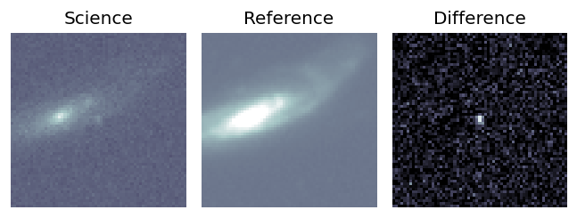
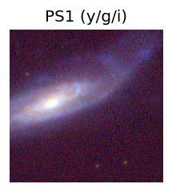
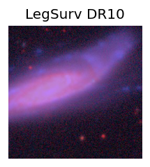
TESS: Sectors [17 57 84]
PS1: 0 sources in 3 arcsec
LegacySurvey: 1 sources in 3 arcsec Closest: d = 6.98 arcsec, 28.0 deg (east of north) photoz=0.09 (68% bounds 0.01, 0.12), type=SER peak abs mag (ext. corrected) = -19.4 (68% bounds -15.36, -20.06)
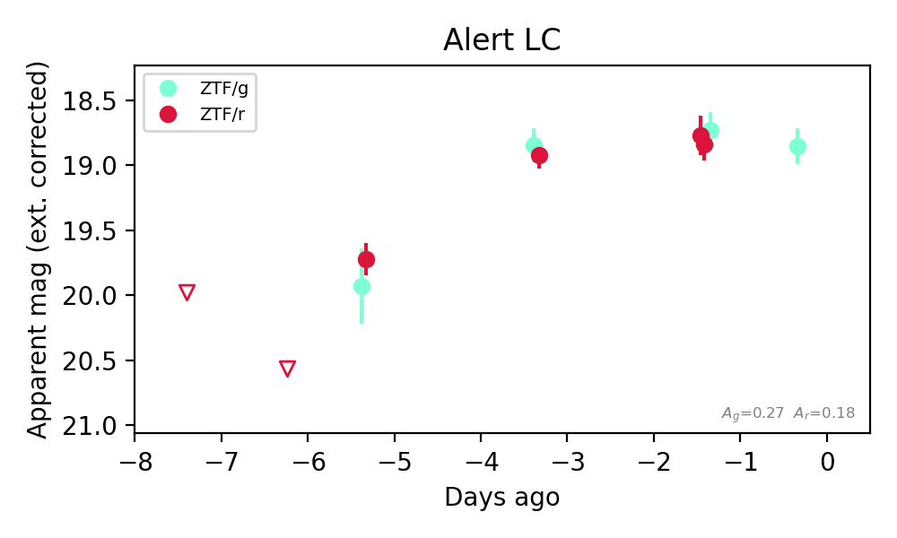
Extinction-corrected gr color:
From alerts: -0.08 +/- 0.17 mag
Consistent with synchrotron, g-r>0!
Rise Rate:
g: 0.32 mag/day
r: 0.92 mag/day
Fade Rate:
2. [ZTF] ZTF26abriotb (FBOT?) [Back to Top] [Share] [Trigger Swift] [Fritz Alert] [Fritz Source] [Lasair]RA, Dec: 303.58398, 10.19228 20h14m20.16s, 10d11m32.21sGalactic (l, b): 51.89492, -13.25511 ext(g-r) = 0.208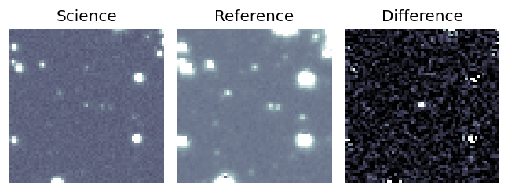
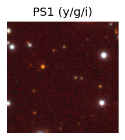

TESS: Sectors [54 81]
PS1: 1 source in 3 arcsec Closest: d = 6.54 arcsec photoz=0.48+/-0.06 peak abs mag = -22.99
LegacySurvey: 0 sources in 3 arcsec
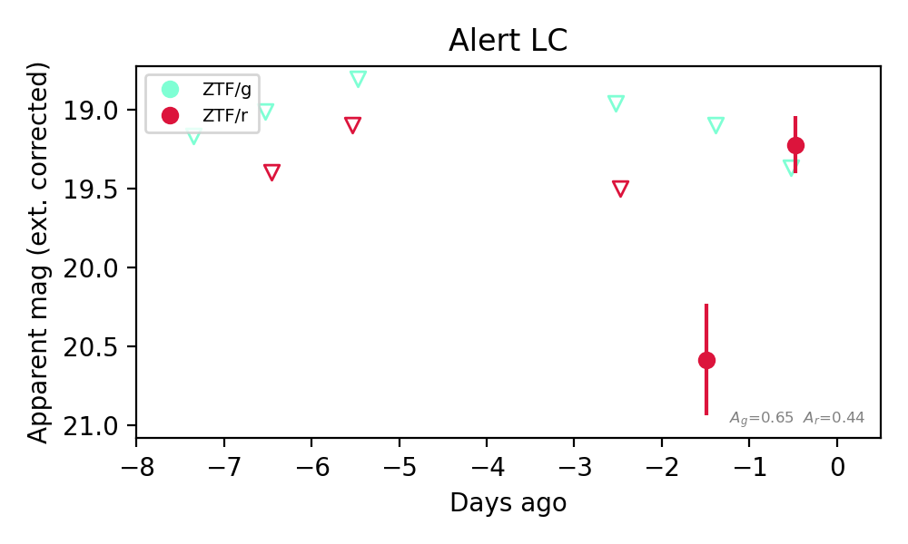
Extinction-corrected gr color:
From alerts: 0.15 +/- 99 mag
Rise Rate:
r: 1.34 mag/day
Fade Rate:
3. [ZTF] ZTF26abriplw (FBOT?) [Back to Top] [Share] [Trigger Swift] [Fritz Alert] [Fritz Source] [Lasair]RA, Dec: 321.78395, -5.39419 21h27m8.15s, -5d-23m-39.09sGalactic (l, b): 47.51866, -36.83875 ext(g-r) = 0.057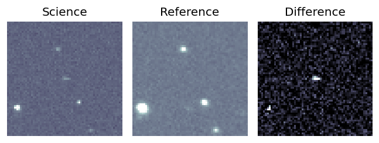
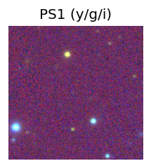
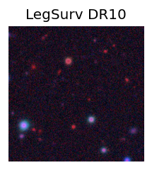
TESS: Sectors [55 82 92]
PS1: 0 sources in 3 arcsec
LegacySurvey: 1 sources in 3 arcsec Closest: d = 1.76 arcsec, 113.8 deg (east of north) photoz=0.75 (68% bounds 0.56, 0.98), type=PSF peak abs mag (ext. corrected) = -23.91 (68% bounds -23.14, -24.64)
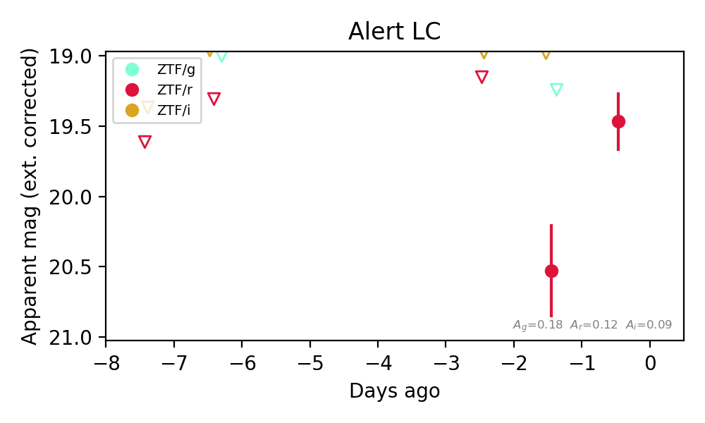
Extinction-corrected gr color:
From alerts: -1.29 +/- 99 mag
Extinction-corrected ri color:
From alerts: 1.55 +/- 99 mag
Rise Rate:
r: 1.08 mag/day
Fade Rate: